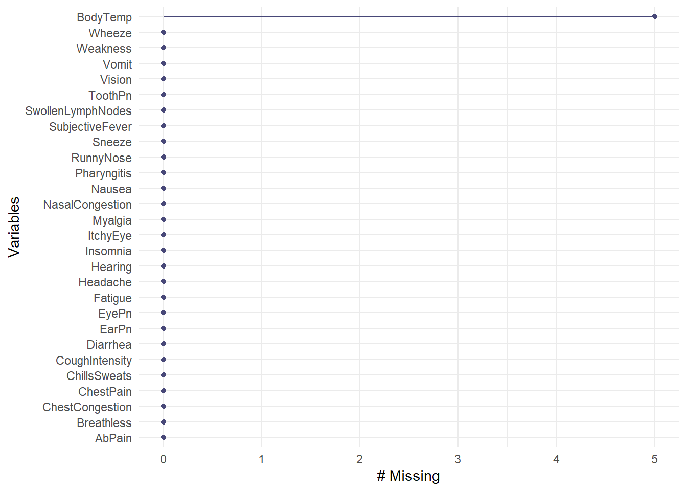

This exercise is the first in the series on evaluating influenza data. This page will wrangle/clean the raw data.
This code script uses the data from this paper: McKay, Brian et al. (2020), Virulence-mediated infectiousness and activity trade-offs and their impact on transmission potential of patients infected with influenza, Dryad, Dataset, https://doi.org/10.5061/dryad.51c59zw4v. The raw data has been placed in the data file of this repository.
library(readr) # for reading in fileslibrary(here) # setting directory
Warning: package 'here' was built under R version 4.2.2
here() starts at C:/Users/Sara/Documents/Documents/Current Classes/MADA/sarabenist-MADA-portfolio
library(naniar) # for finding missing data
Load data
First, we will load the raw data.
#load data from data folderdata <-readRDS(here("fluanalysis/data/SympAct_Any_Pos.rda"))
Data exploring and cleaning
A quick overview of the imported data using the summary() function.
#overview of datasummary(data)
DxName1
Influenza like illness - Clinical Dx :328
Influenza - Virus Identified :131
Fever, unspecified :101
Cough : 66
Acute pharyngitis, unspecified : 50
Acute upper respiratory infection, unspecified: 22
(Other) : 37
DxName2
Influenza - Virus Identified :126
Influenza like illness - Clinical Dx:115
Fever, unspecified : 45
Cough : 41
Acute pharyngitis, unspecified : 31
(Other) : 97
NA's :280
DxName3
Influenza - Virus Identified : 23
Influenza like illness - Clinical Dx: 14
Cough : 10
Fever, unspecified : 6
Acute pharyngitis, unspecified : 4
(Other) : 52
NA's :626
DxName4
Influenza - Virus Identified : 3
Acute upper respiratory infection, unspecified: 2
Encounter for immunization : 2
Influenza like illness - Clinical Dx : 2
Acute pharyngitis, unspecified : 1
(Other) : 9
NA's :716
DxName5
Acute suppurative otitis media without spontaneous rupture of ear drum, right ear : 0
Encounter for immunization : 0
Headache : 1
Other infectious mononucleosis without complication : 0
Strain of other flexor muscle, fascia and tendon at forearm level, right arm, subsequent encounter: 0
NA's :734
Unique.Visit ActivityLevel ActivityLevelF SwollenLymphNodes
Length:735 Min. : 0.000 3 :125 No :421
Class :character 1st Qu.: 3.000 5 : 97 Yes:314
Mode :character Median : 4.000 4 : 95
Mean : 4.463 2 : 80
3rd Qu.: 6.000 7 : 68
Max. :10.000 6 : 66
(Other):204
ChestCongestion ChillsSweats NasalCongestion CoughYN Sneeze Fatigue
No :326 No :131 No :170 No : 75 No :340 No : 64
Yes:409 Yes:604 Yes:565 Yes:660 Yes:395 Yes:671
SubjectiveFever Headache Weakness WeaknessYN CoughIntensity CoughYN2
No :230 No :115 None : 49 No : 49 None : 47 No : 47
Yes:505 Yes:620 Mild :224 Yes:686 Mild :156 Yes:688
Moderate:341 Moderate:360
Severe :121 Severe :172
Myalgia MyalgiaYN RunnyNose AbPain ChestPain Diarrhea EyePn
None : 79 No : 79 No :211 No :642 No :501 No :636 No :622
Mild :214 Yes:656 Yes:524 Yes: 93 Yes:234 Yes: 99 Yes:113
Moderate:327
Severe :115
Insomnia ItchyEye Nausea EarPn Hearing Pharyngitis Breathless
No :316 No :553 No :477 No :573 No :705 No :121 No :438
Yes:419 Yes:182 Yes:258 Yes:162 Yes: 30 Yes:614 Yes:297
ToothPn Vision Vomit Wheeze BodyTemp
No :569 No :716 No :656 No :514 Min. : 97.20
Yes:166 Yes: 19 Yes: 79 Yes:221 1st Qu.: 98.20
Median : 98.50
Mean : 98.94
3rd Qu.: 99.30
Max. :103.10
NA's :5
RapidFluA
Positive for Influenza A :169
Presumptive Negative For Influenza A:159
NA's :407
RapidFluB PCRFluA
Positive for Influenza B : 26 Influenza A Detected :120
Presumptive Negative For Influenza B:302 Influenza A Not Detected: 33
NA's :407 Assay Invalid : 0
Indeterminate : 1
NA's :581
PCRFluB TransScore1 TransScore1F TransScore2
Influenza B Detected : 9 Min. :0.000 0: 13 Min. :0.000
Influenza B Not Detected:145 1st Qu.:3.000 1: 53 1st Qu.:2.000
Assay Invalid : 0 Median :4.000 2:107 Median :3.000
NA's :581 Mean :3.473 3:157 Mean :2.917
3rd Qu.:5.000 4:210 3rd Qu.:4.000
Max. :5.000 5:195 Max. :4.000
TransScore2F TransScore3 TransScore3F TransScore4 TransScore4F
0: 13 Min. :0.000 0: 24 Min. :0.000 0: 50
1: 89 1st Qu.:1.000 1:166 1st Qu.:2.000 1:103
2:138 Median :2.000 2:222 Median :3.000 2:154
3:201 Mean :2.148 3:323 Mean :2.576 3:230
4:294 3rd Qu.:3.000 3rd Qu.:4.000 4:198
Max. :3.000 Max. :4.000
ImpactScore ImpactScore2 ImpactScore3 ImpactScoreF ImpactScore2F
Min. : 2.000 Min. : 2.000 Min. : 0.00 8 :105 7 :107
1st Qu.: 8.000 1st Qu.: 7.000 1st Qu.: 3.00 9 :104 8 :102
Median : 9.000 Median : 8.000 Median : 5.00 10 : 88 9 : 90
Mean : 9.514 Mean : 8.581 Mean : 5.06 7 : 84 10 : 86
3rd Qu.:11.000 3rd Qu.:10.000 3rd Qu.: 7.00 11 : 82 6 : 85
Max. :18.000 Max. :17.000 Max. :13.00 12 : 58 11 : 59
(Other):214 (Other):206
ImpactScore3F ImpactScoreFD TotalSymp1 TotalSymp1F TotalSymp2
4 :134 8 :105 Min. : 5.00 12 : 86 Min. : 4.00
5 :112 9 :104 1st Qu.:11.00 13 : 84 1st Qu.:10.00
3 :108 10 : 88 Median :13.00 14 : 80 Median :12.00
6 :102 7 : 84 Mean :12.99 11 : 72 Mean :12.43
7 : 66 11 : 82 3rd Qu.:15.00 10 : 62 3rd Qu.:15.00
2 : 64 12 : 58 Max. :23.00 15 : 61 Max. :22.00
(Other):149 (Other):214 (Other):290
TotalSymp3
Min. : 3.00
1st Qu.:10.00
Median :12.00
Mean :11.66
3rd Qu.:14.00
Max. :21.00
The symptom variables are mostly categorical, and there are diagnostic and other coding variables in the “DxName”, “Impact”, and “TotalSymp” columns that we will remove to focus specifically on the predictor and outcome variables of interest.
We will go ahead and remove the extra columns, producing a data frame with 735 rows and 32 columns.
#remove extra columnsdata2 <- data %>%select(!contains("Total") &!contains("Score") &!contains("FluA") &!contains("FluB") &!contains("Dxname") &!contains("Activity")) %>%select(!"Unique.Visit")dim(data2)
[1] 735 32
We can also see that some variables have both a Yes/No question and a level of severity. We can remove the Yes/No columns and keep only the severity, which should remove 4 variables.
#remove Yes/No columns if variable also has severity levelsdata2 <- data2 %>%select(!contains("WeaknessYN") &!contains("CoughYN") &!contains("CoughYN2") &!contains("MyalgiaYN"))dim(data2)
[1] 735 28
Now that we have the columns we need, we will check for any missing data and remove the NAs.
#check for NAs and dropgg_miss_var(data2)
Warning: The `guide` argument in `scale_*()` cannot be `FALSE`. This was deprecated in
ggplot2 3.3.4.
ℹ Please use "none" instead.
ℹ The deprecated feature was likely used in the naniar package.
Please report the issue at <https://github.com/njtierney/naniar/issues>.

cleandata <-drop_na(data2)
Save clean data
The data has been cleaned! We will save the cleaned data as cleandata in the data folder.